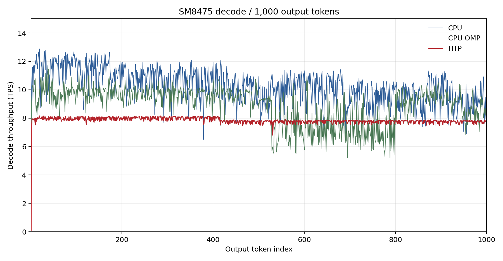
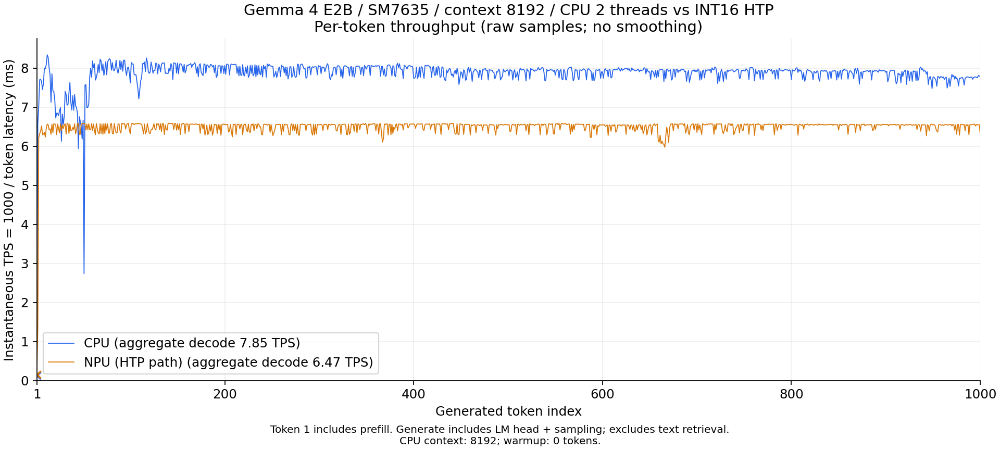
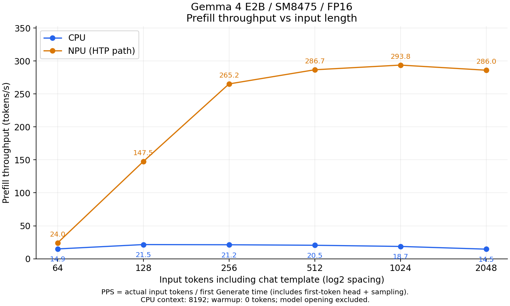
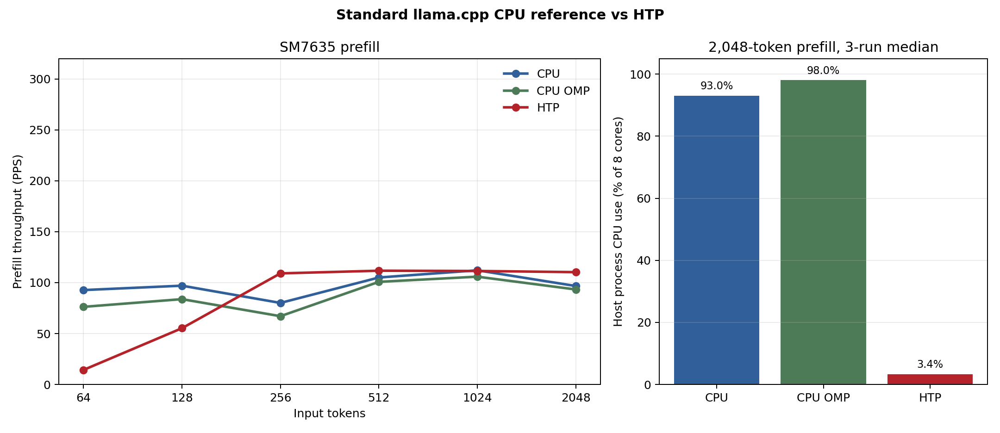

ailia LLM の QNN バックエンドを使用して、Qualcomm SoC の NPU で LLM / VLM を高速に推論する方法を説明します。
ailia LLM 1.5.0 以降は Qualcomm SoC の NPU（Hexagon）を使用した高速推論に対応しています。NPU 向けには、llama.cpp とは異なるアイリア社独自の実装を搭載しており、Android 端末上で Prefill を最大 14 倍高速化できます（Snapdragon 8+ Gen 1、2,048 トークン入力時の同端末 CPU 比）。テキストの LLM だけでなく、画像を入力する VLM（Vision Language Model）や音声入力にも対応し、NPU で処理できます。
QNN（Qualcomm AI Engine Direct）は Qualcomm が提供するバックエンド API です。ailia LLMでは、llama.cppのモデル形式であるGGUFを、QNNで実行可能な形式に変換することで、NPUでの推論を実現しています。
Android の Qualcomm SoC で LLM を実行する主な手法と ailia LLM の比較です。ailia LLM は NPU を使用でき、Gemma 4 を NPU で実行でき、Hexagon v69 以降の比較的古い SoC にも対応します。
| 手法 | NPU 対応 | Gemma 4 対応 | 対応 SoC（Android） | 備考 |
|---|---|---|---|---|
| llama.cpp | × | ○ | 制約なし（CPU 実行） | CPU 実行です。実験的な Hexagon バックエンドがありますが、NPU 側のライブラリ（Skel）が署名されていないため一般の端末では実行できず、HMX（行列演算ユニット）も使用できないため速度も出ません。画像エンコーダは CPU で実行されます。 |
| QNN（Qualcomm AI Engine Direct） | ○ | × | Hexagon v65 以降（Snapdragon 845 以降） | 低レベルの推論 API で、LLM のランタイムは提供されません。 |
| QNN GenAI（Qualcomm Genie / GenieX） | ○ | × | Hexagon v79 以降（Snapdragon 8 Elite 以降） | 公式の対応 Android SoC は Snapdragon 8 Elite 系のみで、Hexagon v79 以降が必須です。Gemma 4 の NPU 用（QAIRT）モデルは提供されていません。 |
| LiteRT-LM NPU | ○ | × | Snapdragon 8 Gen 2 / 8 Gen 3 / 8 Elite（SM8550 / SM8650 / SM8750） | Qualcomm 向けに公開されている NPU モデルは Gemma3-1B（4bit、コンテキスト長 1,280）のみです。Gemma 4 の NPU モデルは Google Tensor と Intel 向けにのみ提供されています。テキスト専用で、画像・音声入力には対応していません。 |
| ailia LLM | ○ | ○ | Hexagon v69 以降（Snapdragon 8 Gen 1 以降） | Snapdragon 8+ Gen 1 などの古い SoC でも NPU を使用でき、Gemma 4 E2B / E4B をテキスト・VLM とも NPU で実行できます。 |
GGUF を PC 上で QNN Model に変換し、変換済みの QNN Model を端末上の ailia LLM で実行します。端末側では GGUF は不要で、QNN Model のみを配置します。
QNN Model は Prefill 用の固定長グラフ（AR-N）と Decode 用のグラフ（AR-1）を同じ QNN Context に格納し、重みと KV キャッシュを共有します。重みは変換時に 4bit（W4）に量子化され、FP16 モデルでは活性値と KV キャッシュは FP16 で処理されます。
ailia LLM Compiler は FP16 と Int16 の両方に対応しており、対象の SoC に応じて変換時に切り替えられます。Snapdragon 7s Gen 3 の NPU は Hexagon v73 ですが、FP16 に対応していないため、ailia LLM では Int16 に量子化したモデルを使用します。Qualcomm の Snapdragon 7s Gen 3 製品資料（PDF、2 ページの Artificial Intelligence）では、NPU の対応精度として INT4、INT8、INT16 が記載されており、FP16 は含まれていません。Hexagon のバージョンだけでなく、SoC ごとの対応精度に合わせてモデルを選択してください。
現在は Gemma 4 E2B と Gemma 4 E4B（いずれもテキスト・画像・音声入力）に対応しています。VLM はテキスト用の QNN Model に加えて、画像エンコーダ（mmproj）用の QNN Model を使用します。対応するモデルは SoC の Hexagon バージョンによって異なります。
| Hexagon バージョン | SoC の例 | 対応モデル | コンテキスト長 |
|---|---|---|---|
| v69 | Snapdragon 8 Gen 1 / 8+ Gen 1 | Gemma 4 E2B | 8K |
| v73 以降 | Snapdragon 8 Gen 2 以降 | Gemma 4 E2B / E4B | 8K |
QNN Model は Snapdragon の機種（SoC）ごとに別ファイルになります。変換済みのモデルファイルを提供していますので、対象端末の SoC に対応したファイルをご利用ください。
| ファイル | 内容 |
|---|---|
<soc>.qnn（例: sm8475.qnn） | テキストモデル（Prefill + Decode） |
<soc>-mmproj.qnn（例: sm8475-mmproj.qnn） | VLM 用の画像エンコーダ（mmproj） |
変換済みの Gemma 4 E2B の QNN Model は下記からダウンロードできます。VLM / 音声入力を使用する場合は、テキストモデルと mmproj の両方をダウンロードしてください。
| SoC | 端末の例 | ファイル | 内容 | サイズ |
|---|---|---|---|---|
| sm8475 （Hexagon v69 / FP16） | Snapdragon 8+ Gen 1 | gemma4-e2b-sm8475.qnn | テキストモデル（Prefill + Decode） | 3.62 GB |
| gemma4-e2b-sm8475-mmproj.qnn | 画像 / 音声エンコーダ（mmproj） | 1.11 GB | ||
| sm7635 （Hexagon v73 / Int16） | Snapdragon 7s Gen 3 | gemma4-e2b-sm7635.qnn | テキストモデル（Prefill + Decode） | 3.60 GB |
| gemma4-e2b-sm7635-mmproj.qnn | 画像 / 音声エンコーダ（mmproj） | 0.73 GB |
いずれも ailia LLM 1.5.0（QAIRT 2.47.0.260601）向けで、コンテキスト長は 8192、AR-256 / AR-1 構成です。
ailiaLLMGetQNNModelName API で取得できる名称）をお知らせいただければ、ailia LLM Compiler で該当 SoC 向けの QNN Model をコンパイルいたしますので、ailia までお問い合わせください。
ailiaLLMGetQNNModelName API で取得できます（例: "sm8475"）。
libailia_llm.so に加えて、libailia_llm_qnn.so をアプリケーションの jniLibs/arm64-v8a に同梱します。アプリ側がロードするのは libailia_llm.so のみで、QNN Model を開いたときにだけ libailia_llm_qnn.so がプラグインとして遅延ロードされます。
libcdsprpc.so の使用を AndroidManifest.xml に記載する必要があります。また、NPU 側のライブラリ（libQnnHtpV*Skel.so）をファイルシステム経由で参照するため、extractNativeLibs を有効にします。
<application android:extractNativeLibs="true" ...>
<uses-native-library android:name="libcdsprpc.so" android:required="false"/>
</application>build.gradle に下記を追加すると、QNN ランタイムが自動的に apk に同梱されます。
implementation 'com.qualcomm.qti:qnn-runtime:2.47.0'QNN Model（.qnn）は GGUF と同じモデル読み込み API に渡します。コンテキスト長に 0 を指定すると、QNN Model に埋め込まれた固定のコンテキスト長が使用されます。VLM の場合は、テキストモデルを開いた後に mmproj の QNN Model をプロジェクタとして開きます。
#include "ailia_llm.h"
struct AILIALLM *llm = nullptr;
ailiaLLMCreate(&llm);
ailiaLLMOpenModelFileA(llm, "sm8475.qnn", /*ctx_size=*/0);
ailiaLLMOpenMultimodalProjectorFileA(llm, "sm8475-mmproj.qnn"); // VLM のみ
// 以降は GGUF と同じ prompt / generate API を使用します
ailiaLLMDestroy(llm);Kotlin（JNI）でも同様に、GGUF のパスの代わりに QNN Model のパスを渡します。
val llm = AiliaLLM()
llm.openModelFile(qnnModelPath, 0) // n_ctx=0 で QNN Model 内の固定長を使用
llm.openMultimodalProjectorFile(mmprojQnnPath) // VLM のみAndroid 向けの評価版 apk は下記からダウンロードできます。QNN 対応版は ailia-models-kotlin-qnn.apk です。
https://github.com/ailia-ai/ailia-models-kotlin/releases/tag/v260720（TBD）
ailia LLM は QNN Model を mmap で読み込み、QNN Context を復元して Hexagon NPU（HTP）上で実行します。Prefill は固定長の AR-N グラフで処理し、プロンプトが AR の倍数でない場合は最後のスライスをパディングします。Decode は同じ Context 内の AR-1 グラフで処理し、Prefill 後の KV キャッシュのコピーは発生しません。VLM では画像のパッチ化と位置埋め込みを CPU で行い、16 層の Vision Transformer からプーリング、プロジェクションまでを 1 つの QNN グラフで実行します。音声入力には Audio グラフを使用し、音声エンコーダを NPU で実行します。
Gemma 4 E2B を 2 機種で測定した結果です。Snapdragon 8+ Gen 1（SM8475 / Hexagon v69、ASUS AI2202）は FP16 モデル、Snapdragon 7s Gen 3（SM7635 / Hexagon v73）は Int16 モデルを使用しています。いずれも QAIRT 2.47.0.260601、コンテキスト長 8192、Q4_0 入力、AR-256 / AR-1 構成です。CPU は同じ端末上の llama.cpp 互換の CPU 実装（GGUF、2 スレッド）を使用しています。
1,000 トークン生成時のスループットです。
| 端末 | モデル | CPU | NPU（QNN） | NPU / CPU |
|---|---|---|---|---|
| SM8475（Hexagon v69） | FP16 | 8.340 tokens/s | 7.536 tokens/s | 0.90 倍 |
| SM7635（Hexagon v73） | Int16 | 7.851 tokens/s | 6.473 tokens/s | 0.82 倍 |
この条件では、いずれの端末でも Decode は CPU の方が高速です。Decode は 1 トークンずつ処理するため重みの読み出しが支配的で、NPU の並列演算性能を活かしにくいことによります。


入力トークン数を 64〜2,048 まで変えたときのスループット（tokens/s）です。各条件で 100 トークンを生成しています。
| 入力トークン数 | SM8475 CPU | SM8475 NPU（FP16） | SM7635 CPU | SM7635 NPU（Int16） |
|---|---|---|---|---|
| 64 | 14.870 | 17.210 | 12.571 | 9.775 |
| 128 | 21.505 | 72.384 | 16.822 | 23.033 |
| 256 | 21.214 | 142.785 | 16.544 | 45.248 |
| 512 | 20.454 | 188.090 | 16.013 | 50.435 |
| 1024 | 18.662 | 206.170 | 15.208 | 52.660 |
| 2048 | 14.549 | 214.491 | 14.295 | 53.870 |
実入力トークン数 / 最初の生成呼び出し時間 です。ウォームアップは行っておらず、初回の遅延を含みます。

同一の 768x768 画像 10 枚（画像 256 + テキスト 62 = 318 入力トークン）の中央値です。TTFT は画像エンコーダを含むプロンプト設定と最初の生成呼び出しの合計で、モデルのオープンは含みません。CPU 側は Decoder が 2 スレッド、画像エンコーダは既定のコア数で動作しています。
| 端末・経路 | TTFT（中央値） | Decode（中央値） |
|---|---|---|
| SM8475 CPU | 137.37 秒 | 6.60 tokens/s |
| SM8475 NPU（FP16） | 9.51 秒 | 6.91 tokens/s |
| SM7635 CPU | 105.18 秒 | 7.93 tokens/s |
| SM7635 NPU（Int16） | 25.82 秒 | 6.20 tokens/s |
画像入力の TTFT は、SM8475 で約 14.4 倍、SM7635 で約 4.1 倍短縮されます。各画像 1 試行の測定であり、CPU と NPU は別試行のため厳密な同時条件の A/B ではありません。
FLEURS の 10 録音（5 言語 各 2 件）の中央値です。TTFT は音声エンコーダを含むプロンプト設定と最初の生成呼び出しの合計で、モデルのオープンは含みません。CPU 側は Decoder が 2 スレッド、音声エンコーダは既定のコア数で動作しています。
| 端末・経路 | TTFT（中央値） | Decode（中央値） | 出力トークン数 |
|---|---|---|---|
| SM8475 CPU | 49.32 秒 | 7.68 tokens/s | 21〜91 |
| SM8475 NPU（FP16） | 8.37 秒 | 6.86 tokens/s | 21〜60 |
| SM7635 CPU | 45.65 秒 | 7.92 tokens/s | 21〜91 |
| SM7635 NPU（Int16） | 13.98 秒 | 5.89 tokens/s | 21〜61 |
音声入力の TTFT は、SM8475 で約 5.9 倍、SM7635 で約 3.3 倍短縮されます。生成される文と出力長は経路ごとに異なるため、TTFT 以外の値は同一出力に対する比較ではありません。CPU と NPU は別試行の測定であり、同時条件の A/B ではありません。
7,936 トークン入力 + 256 トークン出力を各端末で 2 回実行した結果です。全 4 試行で指定トークン数を完走しています。
| 端末 | 試行 | Prefill | Decode |
|---|---|---|---|
| SM8475（FP16） | 1 | 218.956 tokens/s | 7.485 tokens/s |
| SM8475（FP16） | 2 | 200.439 tokens/s | 7.509 tokens/s |
| SM7635（Int16） | 1 | 54.931 tokens/s | 6.444 tokens/s |
| SM7635（Int16） | 2 | 55.082 tokens/s | 6.495 tokens/s |